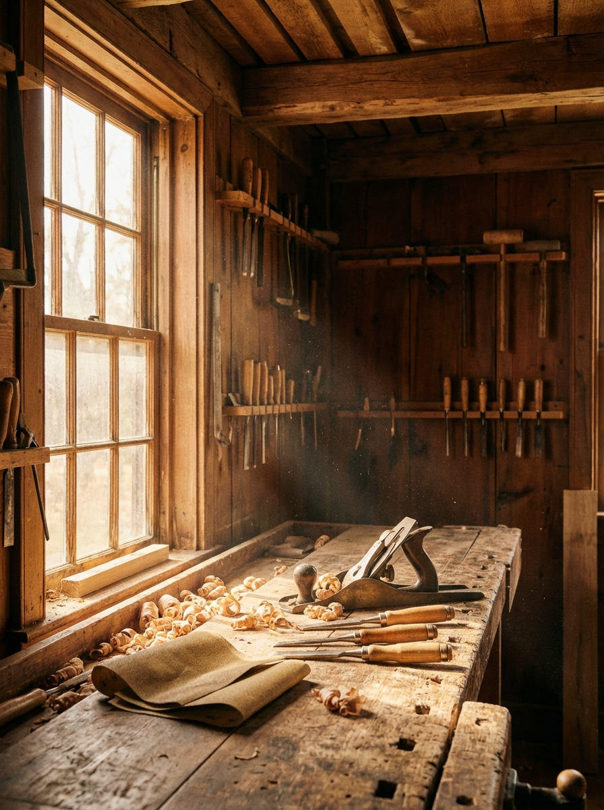
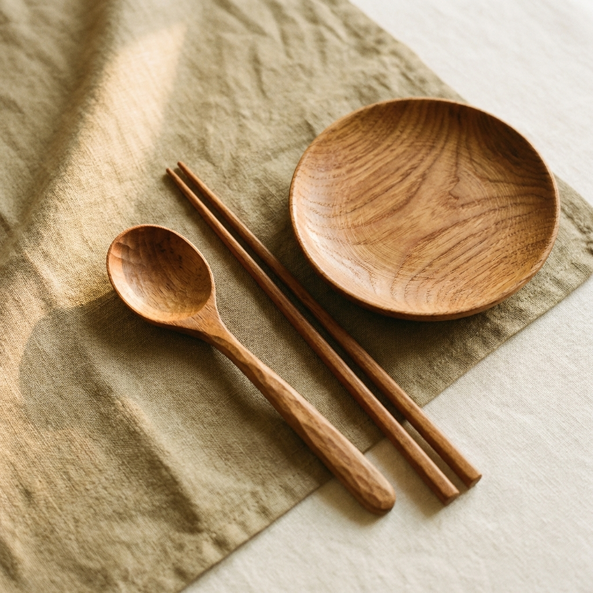
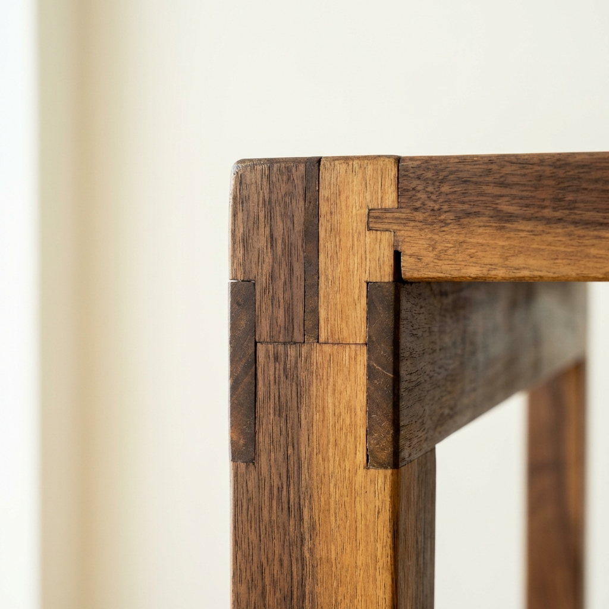
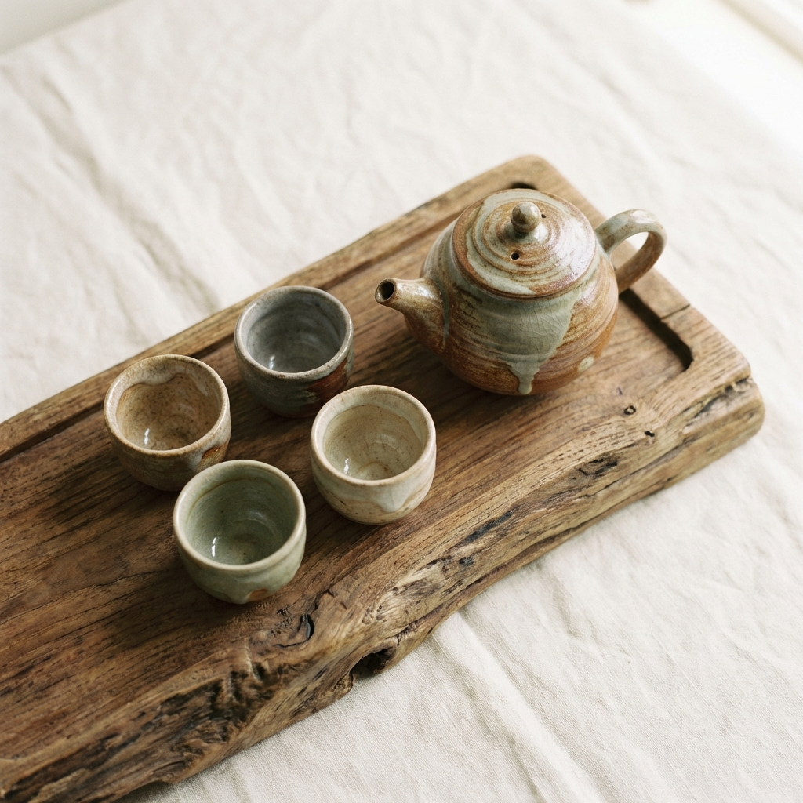

Handcrafted in Taiwan
來自台灣職人的手作工藝
每一件作品都有它的時間。從選材到拋光，都是師傅的雙手與數十個小時的交換。Craftland 相信，好的東西不需要很多，但每一件都應該陪你很久。
Browse Collection
Our Workshop
Craftland 的工坊座落在台南老街的一棟日治時期建築裡。這裡原本是阿公的木工廠，做了四十年的門窗和家具。十年前差點收掉，直到第三代的阿誠決定接手。
阿誠不想只做傳統家具。他把阿公的木工技術與現代設計結合，開始做小件的生活器物——餐具、文具、茶道具。每一件都保留傳統榫卯工法，但造型簡潔俐落。
我們相信手工不是落伍，是對品質的堅持。機器可以做得更快，但師傅的手可以感受木頭的紋理、皮革的厚薄、陶土的濕度。這些感受，是機器永遠學不會的。
每一件都經過數十個小時的製作

台灣在地相思木製作，食品級天然木蠟油塗裝。含木匙、木筷、木盤各一，手感溫潤，越用越有光澤。

從討論需求到完工約需 8-12 週。使用傳統榫卯工法，不使用螺絲釘，結構穩固可傳世。
義大利植鞣牛皮封面，日本巴川紙內頁。皮革會隨使用產生獨特色澤，成為你專屬的樣子。

台南在地陶藝師手拉胚製作，含茶壺一把、品茗杯四只。柴燒窯燒製，每件都是獨一無二的。